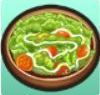

Recetas de cocina


Cada pagina tiene un total de 24 recetas, al ser 5 paginas da un total de 120 recetas.
- Pagina 1 (001 - 024).
- Pagina 2 (025 - 048).
- Pagina 3 (048 - 072).
- Pagina 4 (073 - 096).
- Pagina 5 (097 - 120).
Cada pagina tiene un total de 24 recetas, al ser 5 paginas da un total de 120 recetas.
Las recetas que usan como ingredientes el queso, la leche o los huevos, pueden ser de de cualquier tamaño (C/T).
Pagina 1 (001 - 024)
| Nº | Nombre | Requisitos | Ingredientes | Utencilios | Plato |
|---|---|---|---|---|---|
| 001 | Mayonesa (S) | Mirando el canal de cocina (Episodio 4). | Huevo Común + Aceite | Batidora + Condimentos | |
| 002 | Mayonesa (M) | Mirando el canal de cocina (Episodio 4). | Huevo Bueno + Aceite | Batidora + Condimentos | |
| 003 | Mayonesa (L) | Inspirado después de cocinar 13 recetas con huevo bueno. | Huevo Excelente + Aceite | Batidora + Condimentos | |
| 004 | Mayonesa (G) | Inspirado después de cocinar 5 recetas con huevo Excelente. | Huevo Dorado + Aceite | Batidora + Condimentos | |
| 005 | Mayonesa (P) | Inspirado después de cocinar 3 recetas con huevo Dorado. | Huevo Platino + Aceite | Batidora + Condimentos | |
| 006 | Mayonesa (X) | Inspirado después de cocinar 1 receta que usó huevo platino. | Huevo X + Aceite | Batidora + Condimentos | |
| 007 | Huevo X | Inspirado después de cocinar 50 recetas con Huevo Normal, 25 recetas con Huevo Bueno y 10 recetas con Huevo Excelente. | Huevo Común + Huevo Bueno + Huevo Excelente + Huevo Dorado + Huevo Platino | (No utiliza) |  |
| 008 | Leche X | Inspirado después de cocinar 50 recetas con Leche (S), 25 recetas con Leche (M) y 10 recetas con Leche (L). | Leche (S) + Leche (M) + Leche (L) + Leche (G) + Leche (P) | (No utiliza) | |
| 009 | Queso X | Inspirado después de cocinar 50 recetas con Queso (S), 25 recetas con Queso (M) y 10 recetas con Queso (L). | Queso (S) + Queso (M) + Queso (L) + Queso (G) + Queso (P) | (No utiliza) | |
| 010 | Agua de uvas silvestres | Conocer 1 o más recetas de la lista de recetas requeridas de Lou. | Uvas silvestres + Hierba morada | Olla | |
| 011 | Ensalada | Inspirado después de cocinar 20 recetas con pepino, 20 recetas con tomate, 20 recetas con zanahoria y 20 recetas con repollo. | Pepino + Tomate + Zanahoria + Col. | Cuchillo |  |
| 012 | Arroz con curry | Inspirado después de cocinar 5 recetas que usan Onigiri. | Curry en polvo + Onigiri | Olla | |
| 013 | Estofado | Mirando el canal de cocina (Episodio 4). | Harina de trigo + Leche (C/T) | Olla + Condimentos | |
| 014 | Sopa de miso | Inspirado después de cocinar 5 recetas con Pescado Mediano y 10 recetas con Cebolla. | Espinacas + Cebolla + Huevo (C/T) + Pescado Mediano | Olla + Condimentos | |
| 015 | Sofrito de verduras | Inspirado después de cocinar 5 recetas que usaron col. | Col + Aceite | Cuchillo + Sartén + Condimentos | |
| 016 | Arroz frito | Te lo enseña Harris al tener nivel 4 de amistad o mirando el canal de cocina (Episodio 2). | Onigiri + Aceite + Huevo (C/T) | Sartén | |
| 017 | Okonomiyaki | Te lo enseña Gotts al tener nivel 4 de amistad. | Harina de trigo + Col + Aceite + Huevo (C/T) + Mochi | Cuchillo + Sartén | |
| 018 | Sándwich | Te lo enseña Ellen al tener nivel 4 de amistad. | Pan + Pepino + Tomate + Huevo cocido (Re) | Cuchillo | |
| 019 | Concentrado de frutas | Mirando el canal de cocina (Episodio 3). | Fresas + Manzana + Piña + Uvas silvestres | Batidora | |
| 020 | Batidos de frutas | Te lo enseña Basil al tener nivel 4 de amistad o mirando el canal de cocina (Episodio 3). | Leche (C/T) + Concentrado de frutas (Re) | Batidora | |
| 021 | Concentrado de verduras | Conocer 2 o más recetas de la lista de recetas requeridas de Lou. | Pepino + Col + Zanahoria + Tomate | Batidora | |
| 022 | Concentrado de mixto | Te lo enseña el Doctor al tener nivel 4 de amistad. | Concentrado de verduras (Re) + Concentrado de frutas (Re) | Batidora | |
| 023 | Batidos de frutas y verduras | Inspirado después de cocinar 5 recetas con leche (C/T) y 5 recetas con concentrado de frutas. | Leche (C/T) + Concentrado de frutas (Re) | Batidora | |
| 024 | Papas fritas | Obteniendo un mensaje embotellado durante la primavera cuando uses una caña de pescar de nivel Mithril en el océano. | Patatas + Aceite | Cuchillo + Sartén |
Pagina 2
| Nº | Nombre | Requisitos | Ingredientes | Utencilios |
|---|---|---|---|---|
| 025 | Leche de fresas | Te lo enseña Carter al tener nivel 4 de amistad. | Leche (C/T) + Fresas | Batidora |
| 026 | Ketchup | En una piedra ubicada en el nivel 255 de la mina que esta alado de la cascada, se debe usar la azada para desenterralo. | Tomate + Cebolla | Batidora + Condimentos |
| 027 | Palomitas | Te lo enseña Kai al tener nivel 4 de amistad. | Maiz | Sartén |
| 028 | Maiz Asado | Conocer 3 o más recetas de la lista de recetas requeridas de Lou. | Maiz | Horno |
| 029 | Zumo de piña | Inspiración después de cocinar 5 recetas con piña | Piña | Batidora |
| 030 | Postre de boniato | Te lo enseña Cereza un duende de la cosecha al tener nivel 4 de amistad. | Huevo (C/T) + Boniato + Mantequilla (Re) | Olla + Horno + Condimentos |
| 031 | Boniato asado | Inspiración después de cocinar 2 recetas con boniato o mirando el canal de cocina (Episodio 5). | Boniato | Horno |
| 032 | Huevo fritos | Te lo enseña Lillia al tener nivel 4 de amistad. | Huevo (C/T) + Aceite | Sartén |
| 033 | Tortilla de arroz | Inspiración después de cocinar 5 recetas con huevo (C/T) y 5 recetas con Onigiri. | Huevo (C/T) + Leche (C/T) + Onigiri + Aceite | Sartén |
| 034 | Huevo cocido | Inspiración después de cocinar 1 receta con huevo (C/T). | Huevo (C/T) | Olla |
| 035 | Flan | Te lo enseña Anna en su clase de postres. | Huevo (C/T) + Leche (C/T) | Olla + Horno + Condimentos |
| 036 | Mantequilla | Inspiración después de cocinar 5 recetas con leche (C/T). | Leche (C/T) | Batidora |
| 037 | Torta de queso | Te lo enseña Anna en su clase de postres. | Queso (C/T) + Huevo (C/T) + Leche (C/T) | Olla + Varillas de batir + Horno + Condimentos |
| 038 | Fondue de queso | Te lo enseña Dudley al tener nivel 4 de amistad. | Queso (C/T) + Pan + Berenjena + Zanahoria | Olla |
| 039 | Pastel de manzana | Te lo enseña Anna en su clase de postres. | Manzana + Huevo (C/T) + Mantequilla (Re) + Harina de trigo | Condimentos + Cuchillo + Olla + Rodillo + Horno |
| 040 | Manzana asada | Conocer 4 o más recetas de la lista de recetas requeridas de Lou. | Manzana | Sartén |
| 041 | Arroz con bambú | Inspiración después de cocinar 1 receta con Onigiri. | Brote de bambú + Onigiri | (No utiliza) |
| 042 | Arroz con setas | Mirando el canal de cocina (Episodio 10). | Champiñon + Onigiri | (No utiliza) |
| 043 | Arroz con hongo pino | Mirando el canal de cocina (Episodio 10). | Hongo pino + Onigiri | (No utiliza) |
| 044 | Sushi | Inspiración después de cocinar 1 receta con Onigiri, 1 receta con pescado pequeño, 1 receta con pescado mediano y 1 receta con pescado grande. | Onigiri + Sashimi (Re) | Condimentos |
| 045 | Pan de pasas | Mirando el canal de cocina (Episodio 6) o inspiración después de cocinar 5 recetas con uvas silvestres | Pan + Uvas silvestres | (No utiliza) |
| 046 | Pan de curry | Conocer 5 o más recetas de la lista de recetas requeridas de Lou. | Pan + Curry en polvo + Aceite | Sartén |
| 047 | Torrija | Inspiración después de cocinar 10 recetas con huevos (C/T) y 3 recetas con pan. | Huevo (C/T) + Pan + Aceite | Sartén |
| 048 | Sashimi | Es una receta básica que se obtiene al conseguir la cocina. | Pescado Pequeño + Pescado Mediano + Pescado Grande | Cuchillo |
Pagina 3 (049 - 072)
La Harina de trigo sarraceno es un ingrediente poco comun y se lo puede conseguir en la fiesta de fideos de año nuebo el 30 de invierno.
La hierba negra es un ingrediente que se puede conseguir usando la azada en la mina de la cascada y en la mina del lago.
La flor mágica roja es un ingrediente que se puede conseguir en la granja plantando la Flor mágica azul pero tienes muy pocas posibilidades de que te salga la roja
La hierba es un ingrediente que se puede conseguir en la granja, son las plantas que aparecen en el area de cultivo y por lo general son cortados con la hoz porque estorvan cuando se intenta plantar
| Nº | Nombre | Requisitos | Ingredientes | Utencilios |
|---|---|---|---|---|
| 049 | Pescado a la plancha | Inspiración después de cocinar 1 receta con Pescado Mediano. | Pescado Mediano | Sartén |
| 050 | Udon | Mirando el canal de cocina (Episodio 8). | Harina de trigo | Rodillo + Olla + Cuchillo |
| 051 | Udon con curry | Mirando el canal de cocina (Episodio 8). | Udon (Re) + Curry en polvo | Olla |
| 052 | Udon con tempura | Inspiración después de cocinar 3 recetas con Udon. | Udon (Re) + Tempura (Re) | Rodillo + Olla + Cuchillo |
| 053 | Zaru soba | Es una receta básica que se obtiene al conseguir la cocina. | Harina de trigo sarraceno* | Rodillo + Olla + Cuchillo |
| 054 | Soba con tempura | Inspiración después de cocinar 3 receta con Harina de trigo sarraceno. | Zaru soba (Re) + Tempura (Re) | Olla |
| 055 | Tempura | Inspiración después de cocinar 3 recetas con huevos (C/T), 3 recetas con harina de trigo y 3 recetas con aceite. | Huevos (C/T) + Harina de trigo + Aceite + Berenjena + Boniato + Calabaza | Sartén |
| 056 | Empanadillas de luna | Mirando el canal de cocina (Episodio 11). | Harina de dango | Condimentos |
| 057 | Galletas | Te lo enseña Anna en su clase de postres. | Huevo (Re) + Harina de trigo + Mantequilla (Re) | Condimentos + Rodillo + Horno |
| 058 | Galletas con chocolate | Te lo enseña Sasha al tener nivel 4 de amistad. | Huevo (C/T) + Harina de trigo + Mantequilla (Re) + Chocolate | Condimentos + Rodillo + Horno |
| 059 | Helado | Te lo enseña Anna en su clase de postres o te lo enseña Mugi al tener nivel 4 de amistad. | Huevo (C/T) + Leche (C/T) | Condimentos + Varillas de batir + Olla |
| 060 | Torta | Te lo enseña Anna en su clase de postres o inspiración después de cocinar 10 recetas con huevo (dC/T), 10 recetas con harina de trigo y 10 recetas con mantequilla (Re). | Huevo (C/T) + Harina de trigo + Mantequilla (Re) | Condimentos + Varillas de batir + Horno |
| 061 | Tortita | Inspiración después de cocinar 5 recetas con harina de trigo, 5 recetas con huevo (C/T), 5 recetas con leche (C/T) y 5 recetas con mantequilla (Re). | Harina de trigo + Aceite + Huevo (C/T) + Leche (C/T) + Mantequilla (Re) + Miel | Sartén |
| 062 | Té relajante | Conocer 6 o más recetas de la lista de recetas requeridas de Lou. | Hojas de té relajantes (Re) | Olla |
| 063 | Manzana SMDF | Inspiración después de cocinar 20 recetas con manzanas. | Manzana + Manzana HMMR + Manzana UMSE | (No utiliza) |
| 064 | Manzana HMMR | Inspiración después de cocinar 20 recetas con manzanas. | Manzana + Manzana SMDF + Manzana UMSE | (No utiliza) |
| 065 | Manzana UMSE | Inspiración después de cocinar 20 recetas con manzanas. | Manzana + Manzana SMDF + Manzana HMMR | (No utiliza) |
| 066 | Chute de resistencia | Inspiración después de cocinar 20 recetas con miel. | Miel + Hierva naranja + Hierva negra* + Flor mágica roja* | Olla |
| 067 | Chute de resistencia XL | Mirando el canal de cocina (Episodio 12). | Chute de resistencia (Re) + Hierba azul | Batidora |
| 068 | Cafeína | Inspiración después de cocinar 20 recetas con miel. | Miel + Hierva blanca + Hierva naranja + Flor mágica roja* | Olla |
| 069 | Super cafeína | Conocer 7 o más recetas de la lista de recetas requeridas de Lou. | Cafeína (Re) + Hierva verde | Batidora |
| 070 | Hojas de té relajantes | Conocer 8 o más recetas de la lista de recetas requeridas de Lou. | Hierba azul + Hierba verde + Hierba roja + Hierba amarilla + Hierba naranja + Hierba morada + Hierba azul marino + Hierba* | Cuchillo + Sartén |
| 071 | Hojas de Elly | Inspiración después de cocinar 10 recetas con Hojas de té relajantes (Re). | Hojas de té relajantes (Re) + Chute de resistencia XL (Re) + Super cafeína (Re) | Cuchillo + Sartén + Olla + Horno + Condimentos |
| 072 | Sol primaveral | Inspiración después de cocinar 1 receta con Pescado Mediano. | Flor de luna + Flor de gato rosa + Flor mágica azul + Flor mágica roja + Flor de jugete + Flor dulcesol | No utiliza() |
Pagina 4
| Nº | Nombre | Requisitos | Ingredientes | Utencilios |
|---|---|---|---|---|
| 073 | Mayonesa (S) | Mirando el canal de cocina (Episodio 4). | Huevo Común + Aceite | Batidora + Condimentos |
Pagina 5
| Nº | Nombre | Requisitos | Ingredientes | Utencilios |
|---|---|---|---|---|
| 097 | Mayonesa (S) | Mirando el canal de cocina (Episodio 4). | Huevo Común + Aceite | Batidora + Condimentos |